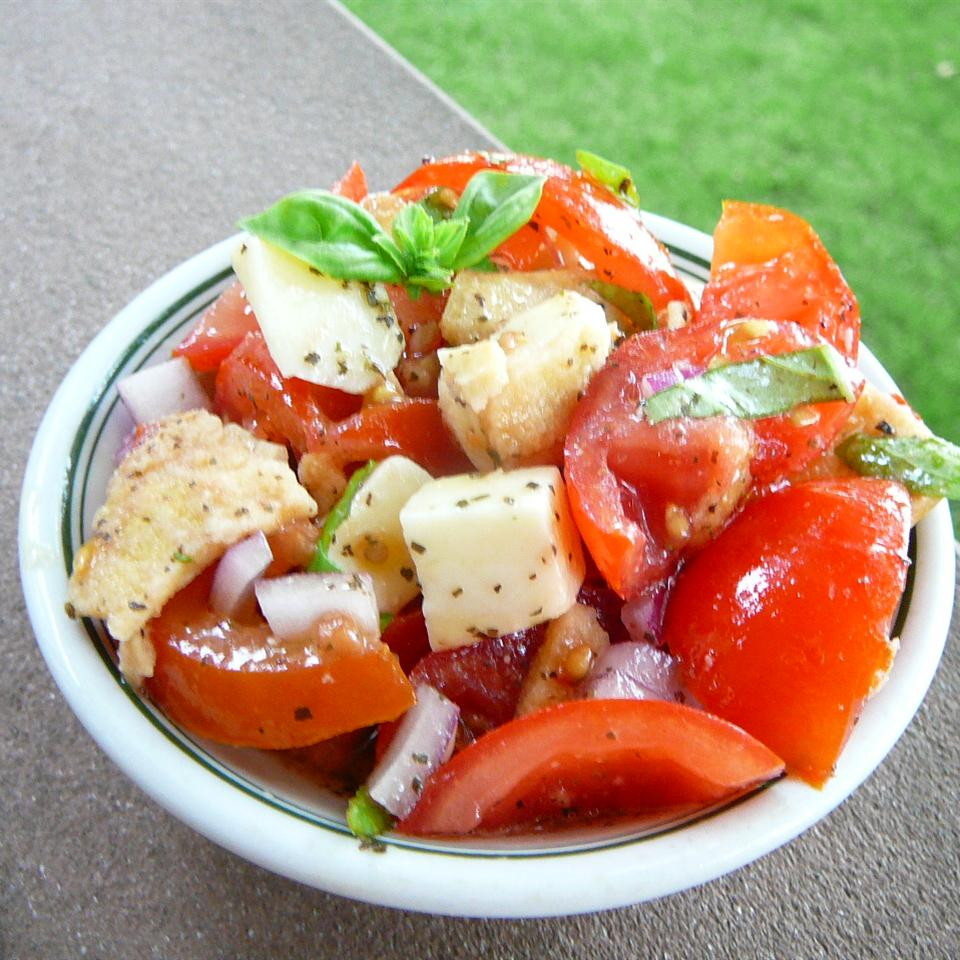

Brushetta Salad

This salad tastes just like bruschetta, but in a bowl. If you like bruschetta, you will love this salad!
Bruschetta salad is a delicious and vibrant summer panzanella salad with tomatoes, basil and croutons finished with a balsamic glaze.
Ingredients
- 6 Roma tomatoes, sliced into rounds
- ½ pound mozzarella cheese, cut into bite-size cubes
- 1 cup crushed garlic-flavored bagel chips
- ½ cup torn fresh basil leaves
- ½ red onion, chopped
- ¼ cup light olive oil
- 3 tablespoons red wine vinegar
- 2 large cloves garlic, minced
Steps
- 1 tablespoon dried basil
- salt and ground black pepper to taste